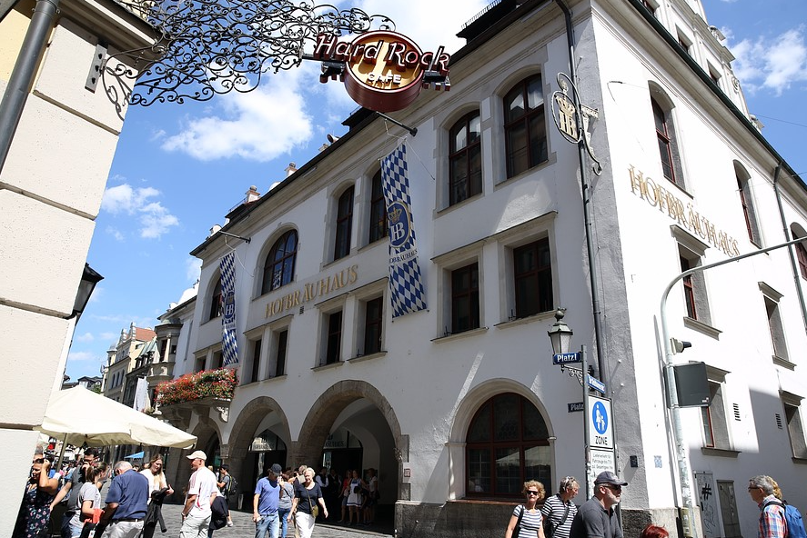

여행 기록
혹시 여행다니는걸 좋아하시나요? 저는 집순이에 귀찮은걸 정말 싫어하는 스타일이여서 여행을 많이 다니지 못할거라 생각했습니다. 하지만, 돌이켜 보면 많은곳을 여행했고 정말 많은것을 볼수 있는 기회가 아니였나 생각이 듭니다. 저의 첫 해외 여행은 일본 오사카를 시작으로 유럽, 미국, 세부를 다녀왔습니다. 특히 유럽여행을 다녀오면서 여행에 대한 진정한 의미를 찾게되었고, 더 많은곳을 여행하고자 노력하는 사람이 되었습니다.
저의 첫 여행 오사카는 정말 정말 더웠습니다. 7월 중순 일본은 그야말로 높은 습도와 뜨거운 태양으로 숨이 턱턱 막히고 아침에 씻고 나와 10보도 채 걷지 못하고 땀방울이 흘러내렸습니다. 하지만 첫 해외여행이라 그런지 그런 더위도 얼마못가 잊혀졌습니다. 오사카 뿐만 아니라 교토, 나라 등 주변도 다녀보고, 일본인들과 술자리도 가져보고 정말 좋은 여행이였습니다. 최근에는 후쿠오카도 다녀왔고 다음 목적지는 오키나와로 정해뒀습니다. 더 나중에는 도쿄, 삿포르를 다녀올 예정이고 가까운만큼 부담없이 즐길 수 있어 좋은것 같습니다.
여행에 대한 관점을 바꿔준 유럽은 정말 최악이면서도 최고였습니다. 유럽으로 가는 비행기 안에서부터 시작된 물갈이로인해 온몸에 발진으로 유럽여행 내내 걷는것도 힘들었습니다. 하지만, 친구들과 함께한 여행이기에 망치고싶지않아 최선을 다해 돌아다녔습니다. 물갈이로 인한 고생은 정말 최악이였지만, 그곳에서 느낀 감정들은 말로 이뤄 표현할 수 없었습니다. 한국과는 너무나도 다른 문화, 한국에서는 볼 수 없는 다양한 음식, 자연, 건축물, 길거리 공연, 소극장 모든것이 새로웠고 흥미로웠습니다. 영국의 맛없는 피시앤칩스, 프랑스의 루브르박물과, 독일의 호프브로이 맥주집, 이탈리아의 로마와 베네치아... 제가 경험했던 모든것을 이야기하고 싶지만, 너무 길어질거 같습니다. 혹시, 정말 혹시 궁금하신분이 계신다면 언제든 물어봐주세요. 하루종일 말씀드릴 수 있습니다.
미국과 세부 모든 여행지가 항상 새롭고 좋았습니다. 다행히 유럽을 제외한 국가에서는 물갈이를 하지 않았고, 그 나라의 문화를 배우고 그 나라 사람들의 생각, 사고방식등을 들여다 볼 수 있는것이 정말좋은거 같습니다. 여행의 진정한 의미역시 그 나라에 대한 이해라고 생각합니다. 여러 국가를 다니며, 그 나라만의 특색을 경험하는것이 너무나도 즐거운 일이였습니다. 다음 여행은 신혼여행으로 지금은 독일이나 오스트리아를 계획하고있습니다. 유럽여행이라 조금 걱정도 되지만, 만반의 준비를 갖추고 간다면 괜찮을거라는 생각으로 준비하고 있습니다.
